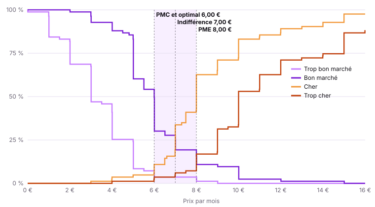

3 · Notre mesure de prix psychologique
Les étudiants acceptent l'offre entre 5,00 € et 7,99 €
Nous avons interrogé de vrais étudiants avec la méthode de Van Westendorp. Résultat : une zone de prix acceptable de 5,00 € à 7,99 €, un prix optimal à 5,99 € (le prix actuel) et un prix d'indifférence à 6,98 €.
Qui a répondu
Le questionnaire a été diffusé du 20 au 25 octobre 2026, via nos promotions, nos proches et les réseaux sociaux. Les chiffres de cette page sont calculés à partir des réponses brutes, téléchargeables ici : donnees/reponses.csv (anonymes, une ligne par répondant).
- 23 personnes ont été écartées dès le filtre : elles n'étaient pas étudiantes ou n'écoutaient pas de musique en streaming (colonne
statut= hors_cible). - 8 réponses ont été retirées de l'analyse parce que leurs quatre prix ne montaient pas (par exemple un prix « trop bon marché » supérieur au prix « bon marché ») : colonne
vw_coherent= 0.
| Profil des 70 réponses complètes | Nombre | Part |
|---|---|---|
| Utilisent surtout Spotify | 45 | 64 % |
| Utilisent surtout Deezer | 12 | 17 % |
| Utilisent surtout Apple Music / YouTube Music | 8 / 5 | 11 % / 7 % |
| Ont une offre étudiante payante | 29 | 41 % |
| Sont sur une offre Famille | 26 | 37 % |
| Utilisent une offre gratuite | 9 | 13 % |
| Paient eux-mêmes leur abonnement | 32 | 46 % |
| Ont entre 18 et 25 ans (âge d'éligibilité à Deezer Étudiant) | 68 | 97 % |
Ce que nous avons demandé
Le répondant voit d'abord l'offre Deezer Étudiant décrite précisément (1 compte Premium, sans publicité, écoute hors connexion, son haute fidélité, sans engagement), sans aucun prix affiché, ni celui de Deezer ni celui d'un concurrent, pour ne pas orienter les réponses. C'est la consigne du cours : « le répondant doit d'abord voir l'offre décrite précisément » (CM 2). Il répond ensuite librement, en euros par mois, aux quatre questions de Van Westendorp, toujours dans le même ordre :
- À quel prix trouveriez-vous cette offre si bon marché que vous douteriez de sa qualité ?
- À quel prix la trouveriez-vous bon marché, c'est-à-dire une bonne affaire ?
- À quel prix la trouveriez-vous chère, tout en l'envisageant quand même ?
- À quel prix la trouveriez-vous trop chère pour l'envisager ?
Le questionnaire est toujours en ligne : sondage Deezer.
Les résultats de Van Westendorp

| Point | Croisement des courbes | Prix |
|---|---|---|
| Point marginal de bon marché (PMC) | « trop bon marché » et « cher » | 5,00 € |
| Prix optimal | « trop bon marché » et « trop cher » | 5,99 € |
| Prix d'indifférence | « bon marché » et « cher » | 6,98 € |
| Point marginal de cherté (PME) | « bon marché » et « trop cher » | 7,99 € |
Méthode : CM 1, « Le prix que le client accepte » (zone acceptable entre PMC et PME, prix optimal au croisement « trop bon marché » / « trop cher ») ; définition des quatre points : Van Westendorp's Price Sensitivity Meter.
Lecture
Le prix actuel de 5,99 € est exactement le prix optimal : c'est le prix où le moins de gens trouvent l'offre trop chère ou trop bon marché. Le prix d'indifférence, 6,98 €, est le prix où autant de répondants trouvent l'offre « bon marché » que « chère » : c'est le prix que les étudiants considèrent comme normal pour cette offre. Spotify (7,07 €) est dans la zone acceptable, juste au-dessus de ce prix normal.
Part des répondants qui rejettent chaque prix
| Prix testé | la trouvent trop chère | la trouvent chère | la trouvent encore bon marché |
|---|---|---|---|
| 5,99 € (prix actuel) | 1,6 % | 9,7 % | 33,9 % |
| 6,49 € | 4,8 % | 16,1 % | 21,0 % |
| 6,99 € (notre proposition) | 4,8 % | 22,6 % | 21,0 % |
| 7,07 € (Spotify) | 9,7 % | 46,8 % | 16,1 % |
3 ÷ 62 = 4,8 % ; 14 sur 62 ont donné un prix « cher » inférieur ou égal à 6,99 €, soit 14 ÷ 62 = 22,6 %.Entre 6,99 € et 7,07 €, la part qui trouve l'offre « chère » double (de 22,6 % à 46,8 %) : beaucoup de répondants ont un seuil psychologique à 7 €. 6,99 € est le dernier prix sous ce seuil.
Les étudiants déjà abonnés à une offre étudiante sont plus sensibles
Sur les 26 répondants cohérents qui paient déjà une offre étudiante, la zone acceptable est plus étroite : de 5,00 € à environ 6,00 €. À 6,99 €, 7,7 % d'entre eux trouvent l'offre trop chère et 30,8 % la trouvent chère (2 et 8 répondants sur 26, colonne formule = etudiante). Avec si peu de répondants, ces chiffres sont fragiles, mais ils disent où se trouve le risque : chez les abonnés actuels. Notre proposition en tient compte.
Les limites de cette mesure
- Un échantillon de convenance : nos réseaux, surtout des étudiants d'Auvergne ; il décrit ceux qui ont répondu, pas tous les étudiants de France.
- Peu d'utilisateurs de Deezer (12 sur 70) : nous mesurons surtout le prix acceptable pour un étudiant qui ne paie pas encore Deezer, donc un prix d'acquisition.
- Dire n'est pas payer : les réponses déclarées sont souvent plus généreuses que les achats réels.
- Pas de version A/B : notre première version affichait le prix de Spotify dans une version sur deux. Le professeur nous a fait retirer cet affichage, qui ancrait les réponses sur un prix. Le questionnaire final est donc le même pour tous.
- Gabor-Granger et échelles de Likert non exploitables : le questionnaire posait aussi des prix un par un (Gabor-Granger) et six questions sur la valeur perçue. Une erreur de notre script d'enregistrement Google Sheets n'a pas sauvegardé ces colonnes. Notre décision repose donc sur Van Westendorp seul.